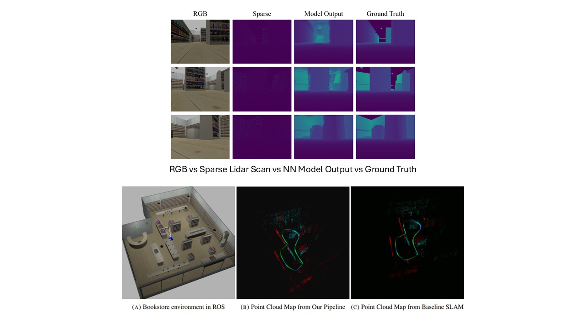
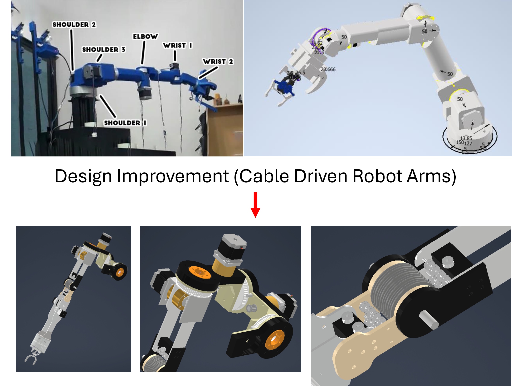
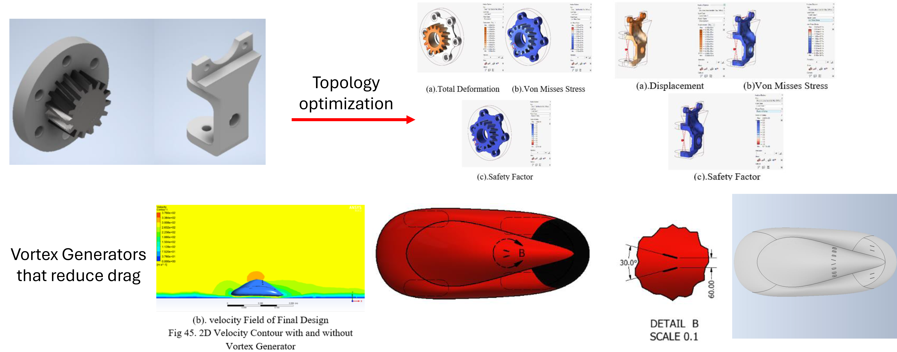

A current Graduate student in Mechanical Engineering and Applied Mechanics at the University of Pennsylvania,
cum laude graduate in Mechanical Engineering from the University of Indonesia, and an advanced diploma in
Mechanical Engineering from TAFE NSW honoured with the TAFE Excellence Award 2019. My educational background
has given me a strong foundation in engineering principles, especially robotics, automation, and control systems.
My experiences lie in the field of engineering design for automation projects, especially in manufacturing,
automotive, and biomedical industries. I believe embracing automation and digitalization can optimize efficiency,
drive innovation, and propel organizations to new heights.
Steerable Tape-Spring Needle for Autonomous Sharp Turns Through Tissue
Abstract
Steerable needles offer a minimally invasive method to deliver treatment
to hard-to-reach tissue regions. We introduce a new class of tape-spring steerable needles
capable of sharp turns ranging from 15 to 150 degrees with a turn radius as low as 3mm, which
minimizes surrounding tissue damage. In this work, we derive and experimentally validate a geometric
model for our steerable needle design. We evaluate both manual and robotic steering of the needle along a
Dubins path in 7 kPa and 13 kPa tissue phantoms, simulating our target clinical application in healthy and
unhealthy liver tissue. We conduct experiments to measure needle robustness to stiffness transitions between
non-homogeneous tissues. We demonstrate progress towards clinical use with needle tip tracking via
ultrasound imaging, navigation around anatomical obstacles, and integration with a robotic autonomous steering system.
Key Responsibilities
Developed a new class of tape-spring steerable needles capable of
sharp turns (15°-150°) with a minimal turn radius of 3mm, reducing
tissue damage in minimally invasive procedures
Derived and experimentally validated a geometric model for
steerable needle design
Evaluated manual and robotic steering of the needle along Dubins
paths in tissue phantoms simulating healthy and unhealthy liver
tissues (7 kPa and 13 kPa stiffness)
Demonstrated needle tip tracking via ultrasound, navigation around
anatomical obstacles, and integration with robotic autonomous
steering systems
Implementation of Compliance Controller and Imitation Learning
for a 6 DOF Robot Arms for Building Bracket Installation
Key Responsibilities:
Implemented compliance and force control on a 6 DOF robot arm for
tasks that require contacts and dragging such as channel search,
bracket alignment, and nut tightening/loosening, improving
installation precision
Tuned control gains (stiffness, PD, error scale), achieving a 95%
success rate in bracket installation
Trained and developed an imitation learning model for automated
bracket insertion, achieving position and orientation RMSE of <
0.0001 from expert trajectories
Automated pipeline for automatic bracket insertion data collection
for model training purposes
Prepared both the software and hardware for robot operation,
including launch files, controller gains, URDF, FT-sensor mount,
pneumatics wiring, and microcontroller and PCB wiring
Implementation of Depth Estimation Network for Monocular Camera with Sparse LIDAR Data

Key Responsibilities
Final project of Upenn graduate level Learning in Robotics
Course
Implemented a Neural Network to generate dense RGB-D
depth estimation images from sparse LiDAR scans and
monocular camera data
Enhanced the accuracy of RGB-D SLAM by integrating deep
learning-based depth completion techniques
Evaluated the depth completion model and SLAM pipeline
using diverse real-world datasets (KITTI, TUM), and created
environment improving generalizability and robustness
Control and Optimization
of FRANKA EMIKA (Panda) Robot Arm
Key Responsibilities:
Final project of Upenn graduate level robotics course
(MEAM5200)
Used Robot Operating System (ROS) and Python to control and
simulate the movement of the Franka Emika (PANDA) robot arm
Developed code for kinematics and dynamics control of the
robot (Forward Kinematics, Inverse Kinematics, Velocity Control,
Position Control)
Developed path planning algorithm to execute secondary tasks
on top of a main task (Bidirectional RRT, Artificial Potential Field)
Integrated camera-based object detection technique with
developed kinematics and dynamics algorithm for pick and place
tasks
Development of a 4-Wheeled Mecanum Drive Mobile Base
Key Responsibilities:
Final Project of Upenn graduate level Mechatronics Course
Developed WiFi-based control and localisation via ESP32 and
maintained system responsiveness and reliability
Employed I2C protocol for sensors and ESP-NOW for wireless
board-to-board communication to reduce physical
connections in electrical assembly by 80%
Utilized Solidworks, Autodesk Inventor, and Draftsight to
prepare design drawings and files for manufacturing
Soft Actuator &
Variable Stiffness
Link
Key Responsibilities:
Design of soft actuator & Variable stiffness
link that can generate 9N lifting force at 37
kPa
When stiffens, the system provides stiffness
up to 3x compare to its relaxed state
These images illustrates the design, the
actual soft actuator, and the jig used to test
the lifting force of the actuator
Redesign of a Cable-Driven Teleoperated Robot Arm

Key Responsibilities:
Cable Drive is used to reduce the moment of
inertia of the robot arm
The motor can be placed closer to the fixed
support (shoulder)
Less material is needed on the lower arm of
the robot reducing the overall weight of the
robot arm
The pulley mechanism on the elbow
increases torque by 20 x
Shell Eco Marathon Virtual Offtrack 2021

Key Responsibilities:
Increased fuel efficiency by reducing component's weight and optimizing flow around the car prototype
Utilization of topology optimization to reduce components’ weight (54% mass reduction on average)
Vortex generators as passive flow control to reduce drag in the car by 14.74%
Development of a High
Torque and Self-Rechargeable Conversion E-bike with Knockdown System
Key Responsibilities:
Developed a high torque mountain bike conversion with pinion and pulley system (increased torque by 8.75x)
Won the best presentation at INSITEF 2022 conference (the 3rd international science and
technology fair in conjunction with the 3rd mechanical engineering joint symposium)
Steerable Tape-Spring Needle for Autonomous Sharp Turns Through Tissue Omar Abdoun, Davin
Tjandra, Katie Yin, Pablo Kurzan, Jessica Yin, Mark Yim bioRxiv 2024.09.22.614377; doi:
https://doi.org/10.1101/2024.09.22.614377
Development of a Soft Actuator and Variable Stiffness Link
Tjandra, Davin (2022). Pengembangan Soft Actuator dengan Variable Stiffness Link (Development
of Soft Actuator Integrated with Variable Stiffness Link) [Unpublished Bachelor’s Degree Thesis,
Universitas Indonesia]
E-Bike Conversion Patent
Davin., Mughni, M. I., Dani, K. D., Lianto, A. E., Dhelika, R. (2021). Sepeda listrik berbasis konversi
dengan fitur torsi tinggi, pengisian daya dari gerak putar roda, dan sistem lepas pasang (high
torque and self rechargeable conversion e-bike with knockdown system). Berita Resmi Paten
Sederhana Seri-A (Indonesia Serie-A Patent-S00202111212)
https://dgip.go.id/uploads/berita_resmi/file/697e9c08a34dd5b0f49310c339c5e648.pdf
(page 29)